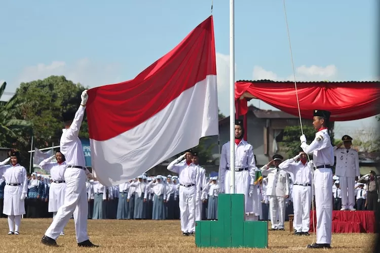

Pengertian Sumpah Pemuda
Sumpah Pemuda merupakan ikrar kebangsaan yang dirumuskan melalui sebuah putusan Kongres Pemuda Kedua di Jakarta pada 27-28 Oktober 1928. Ikrar ini adalah pernyataan kebangsaan pemuda pemuda Indonesia dari berbagai latar belakang daerah, suku, dan agama, menyatukan keyakinan mereka bahwa tumpah darah, bangsa, dan bahasa persatuan: ialah Indonesia. Keyakinan itu lalu disebarluaskan untuk dijadikan asas bagi semua perkumpulan kebangsaan Indonesia setelah peristiwa Kongres Pemuda Kedua.
Isi Sumpah Pemuda
-
Kami poetra dan poetri Indonesia, mengakoe bertoempah darah jang satoe, tanah air Indonesia.
-
Kami poetra dan poetri Indonesia mengakoe berbangsa jang satoe, bangsa Indonesia.
-
Kami poetra dan poetri Indonesia mendjoendjoeng bahasa persatoean, bahasa Indonesia.
Sumpah Pemuda mengandung tekad untuk bersatu dan berjuang demi kemerdekaan Indonesia, tanpa memandang perbedaan suku, agama, atau budaya. Sumpah ini memperkuat semangat persatuan dan kesatuan bangsa, serta mengukuhkan bahasa Indonesia sebagai bahasa persatuan. Sumpah Pemuda menjadi tonggak penting dalam pergerakan nasional Indonesia, menginspirasi pemuda-pemuda Indonesia untuk terus berjuang melawan penjajahan dan memperjuangkan kemerdekaan.
Sejarah Pembentukan Sumpah Pemuda
Rapat Pertama
Rapat pertama, Sabtu, 27 Oktober 1928 antara pukul 19.30-23.30, di Gedung Katholieke Jongenlingen Bond (KJB), Lapangan Banteng. Dalam sambutannya, Soegondo berharap kongres ini dapat memperkuat semangat persatuan dalam sanubari para pemuda. Acara dilanjutkan dengan uraian Moehammad Jamin tentang arti dan hubungan persatuan dengan pemuda. Menurutnya, ada lima faktor yang bisa memperkuat persatuan Indonesia yaitu sejarah, bahasa, hukum adat, pendidikan, dan kemauan.

Ilustrasi Semangat Pemuda
Rapat Kedua
Rapat kedua, Minggu, 28 Oktober 1928 dari pukul 08.00-12.00, di Gedung Oost-Java Bioscoop, membahas masalah pendidikan. Kedua pembicara, Poernomowoelan dan Sarmidi Mangoensarkoro, sependapat bahwa anak harus mendapat pendidikan kebangsaan, harus pula ada keseimbangan antara pendidikan di sekolah dan di rumah. Anak juga harus dididik secara demokratis.
Rapat Ketiga
Rapat ketiga, Masih di hari yang sama, tanggal 28 Oktober 1928, pukul 17.30-23.30 di Gedung Indonesische Clubgebouw Pada sesi berikutnya, Soenario menjelaskan pentingnya nasionalisme dan demokrasi selain gerakan kepanduan. Sedangkan Ramelan mengemukakan, gerakan kepanduan tidak bisa dipisahkan dari pergerakan nasional. Gerakan kepanduan sejak dini mendidik anak-anak disiplin dan mandiri, hal-hal yang dibutuhkan dalam perjuangan.
Sebelum kongres ditutup diperdengarkan lagu “Indonesia” karya Wage Rudolf Supratman. Lagu tersebut disambut dengan sangat meriah oleh peserta kongres. Kongres ditutup dengan mengumumkan rumusan hasil kongres. Oleh para pemuda yang hadir, rumusan itu diucapkan sebagai Sumpah Setia, berbunyi :